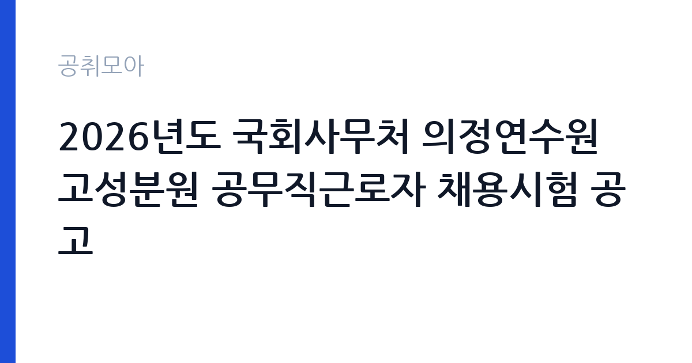

[국가기관] 2026년도 국회사무처 의정연수원 고성분원 공무직근로자 채용시험 공고
국회 국회사무처 · 강원 · 마감 2026-10-07 (D-3) · 출처 나라일터

한눈에 보는 모집 조건
| 기관 | 국회 국회사무처 |
|---|---|
| 공고명 | 2026년도 국회사무처 의정연수원 고성분원 공무직근로자 채용시험 공고 |
| 고용형태 | 공무직 |
| 근무지 | 강원 |
| 게시일 | 2026-10-02 |
| 마감일 | 2026-10-07 (D-3) |
지원자격, 이렇게 읽으세요
- 공무직근로자(환경미화 사원) 1명 공무직근로자(경비·안내 사원) 1명 공
- 접수 ~2026-10-07 마감
- 세부 조건은 원문 공고문 확인
모집 분야는 공무직근로자 환경미화 사원과 경비·안내 사원, 조경관리 사원, 시설관리(승강기) 사원입니다. 채용 형태는 무기계약직이며 선발 방법은 서류 심사와 면접이고 환경미화 분야는 실기가 추가됩니다. 분야별로 요구되는 자격과 경력이 다를 수 있으니 본인이 지원할 분야의 세부 조건을 원문 공고문에서 확인하셔야 합니다. 시설관리(승강기) 분야는 관련 자격증이 필요할 가능성이 높으니 미리 확인하십시오. 한 사람이 여러 분야에 중복 지원할 수 있는지도 원문에서 대조하십시오.
이 공고의 포인트
이 공고의 가장 큰 매력은 국회 소속 무기계약직이라는 점입니다. 정년이 보장되고 국회라는 기관의 안정성과 복지를 누릴 수 있어 공무직을 찾는 분께는 손에 꼽히는 기회입니다. 한 번에 네 개 분야를 뽑아 본인의 경력에 맞는 분야를 골라 지원할 수 있는 것도 장점입니다. 다만 근무지가 강원도 고성이라 수도권 거주자는 이주나 장거리 출퇴근을 감안해야 합니다. 의정연수원 고성분원은 국회의원과 국회 직원 연수가 이루어지는 시설로, 근무 환경이 비교적 정돈되어 있습니다. 마감일이 10월 7일로 임박했으니 서둘러야 합니다.
전형은 어떻게 진행되나
선발 방법은 서류 심사와 면접이며 환경미화 분야에만 실기가 추가됩니다. 원서 접수 마감은 2026년 10월 7일이므로 접수 방법 확인 후 즉시 지원하십시오. 환경미화 실기는 청소 실무 능력을 직접 평가하는 단계일 가능성이 높아 현장 경험을 정리해 두시는 것이 좋습니다. 이후 일정과 합격자 발표 방식은 원문 공고문에서 확인하십시오. 담당 부서는 국회사무처 인사과이며 문의 전화는 02-6788-2081입니다.
원문에서 확인한 전형 방식
○ 채용분야 : 1. 공무직근로자 환경미화 사원 2. 공무직근로자 경비·안내 사원 3. 공무직근로자 조경관리 사원 4. 공무직근로자 시설관리(승강기) 사원 ○ 채용기간 : 무기계약직(정년보장) ○ 선발방법 : 서류-실기(환경미화 분야만 해당)-면접 ○ 담당부서(연락처) : 국회사무처 인사과(02-6788-2081)
이런 분께 추천해요
- 강원 고성 인근에 거주하며 국회 소속 안정적인 일자리를 찾는 분께 가장 적합합니다.
- 미화나 경비, 조경, 시설관리 분야 실무 경험이 있는 분께 잘 맞습니다.
- 정년 보장이 되는 무기계약직으로 장기 근속을 희망하는 분께 추천합니다.
지원 전 체크리스트
- 마감일이 10월 7일로 임박했으니 접수 방법 확인 후 즉시 지원하십시오.
- 지원할 분야의 세부 자격과 우대 조건을 원문에서 대조하십시오.
- 환경미화 분야는 실기가 있으니 실무 능력을 미리 점검하십시오.
- 근무지가 강원도 고성임을 감안해 거주와 출퇴근 계획을 세우십시오.
모집 일정과 제출 타이밍
원서 접수 마감일은 2026년 10월 7일로 일주일도 남지 않았습니다. 오늘이나 내일 중으로 접수하시는 것을 권장합니다. 이후 서류 심사와 실기, 면접 일정은 원문 공고문에 안내되어 있으니 원문에서 확인하십시오. 접수 기간이 짧은 공고는 막판 혼잡이 생길 수 있어 이른 제출이 유리합니다.
직무 이해하기: 국가기관
근무지는 국회사무처 의정연수원 고성분원으로 연수 시설의 관리와 운영 지원을 맡습니다. 환경미화 사원은 시설 청소와 환경 정비를, 경비·안내 사원은 출입 관리와 내방객 안내를 담당합니다. 조경관리 사원은 부지 내 조경 유지 관리를, 시설관리(승강기) 사원은 승강기를 포함한 시설 점검과 관리를 맡습니다. 의정연수원은 연수생이 이용하는 시설이라 이용자 응대와 시설 상태 유지가 중요한 업무입니다. 구체적인 업무 분장은 원문 공고문에서 확인하십시오.
자기소개서 작성 팁
지원서에는 지원하는 분야의 실무 경험을 구체적으로 적으십시오. 미화나 경비, 조경, 시설관리 경험을 기간과 담당 내용 중심으로 쓰시면 좋습니다. 관련 자격증이 있다면 모두 기재하십시오. 국회 연수 시설에서 일한다는 점을 언급하며 공공기관 근무에 대한 책임감을 보여주면 좋은 인상을 줄 수 있습니다. 고성 근무에 대한 본인의 계획도 간략히 밝혀 정착 의지를 보여주는 것이 좋습니다.
면접 준비 포인트
면접에서는 해당 분야 실무 질문이 중심이 될 가능성이 높습니다. 본인 분야의 작업 절차와 안전 수칙, 돌발 상황 대처 경험을 묻는 질문에 대비하십시오. 연수 시설 이용자를 대하는 친절 마인드와 야간·휴일 근무 수용 의사도 물을 수 있습니다. 장기 근속 의사를 명확히 보여주는 것이 무기계약직 면접의 핵심입니다. 단정한 복장으로 성실한 인상을 주십시오.
급여·근무조건 읽는 법
이 공고의 정확한 보수는 원문 공고문에서 확인하셔야 합니다. 참고로 국회사무처 공무직은 2022년 노사 합의로 기본급 인상과 함께 명절상여금과 가족수당을 공무원과 차별 없이 지급하는 방향으로 처우 개선이 추진되어 왔으며, 기준임금을 최저임금의 120퍼센트 수준으로 책정하는 목표도 세워진 바 있습니다. 2026년 최저임금은 월 2,156,880원(시급 10,320원, 주 40시간 기준, 고용노동부 고시)이므로 이를 하한으로 보고 원문 보수 조건을 대조하십시오. 기본급과 수당, 상여를 구분해 확인하시는 것이 좋습니다.
자주 묻는 질문
- 무기계약직은 정년이 보장되나요?
무기계약직은 계약 기간의 정함이 없어 정년까지 근무할 수 있는 형태로 공무직의 일반적인 계약 방식입니다. 정년과 처우 세부 조건은 원문 공고문에서 확인하십시오. - 환경미화 실기는 어떻게 진행되나요?
서류 심사와 면접 외에 실무 능력을 평가하는 단계가 추가됩니다. 구체적인 평가 내용과 일정은 원문 공고문에서 확인하십시오. - 고성분원은 어디에 있나요?
국회사무처 의정연수원의 강원도 고성 소재 분원 시설입니다. 수도권 거주자는 이주나 출퇴근 계획을 미리 세우셔야 합니다.
함께 보면 좋은 공고
[국가기관] 한국방송통신대학교 대구경북지역대학 청사관리직(미화방호) 채용공고(무기계약직(기간제계약직)) — 마감 2026-10-15[국가기관] 국립창원대학교 입학과 기간제근로자(입학사정관) 채용 공고 — 마감 2026-10-12[국가기관] 2026년 인제경찰서 무기계약(보일러 등 시설관리) 근로자 채용 재공고 — 마감 2026-10-08출처: 나라일터 공개정보를 바탕으로 공취모아가 정리한 안내글입니다. 모집 조건·일정은 변경될 수 있으니 지원 전 반드시 원문 공고문을 확인하세요. 본 글은 정보 제공용이며 합격을 보장하지 않습니다.